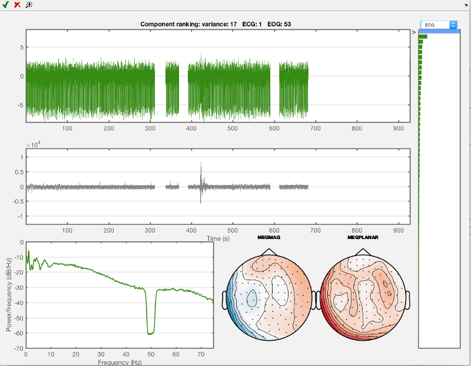
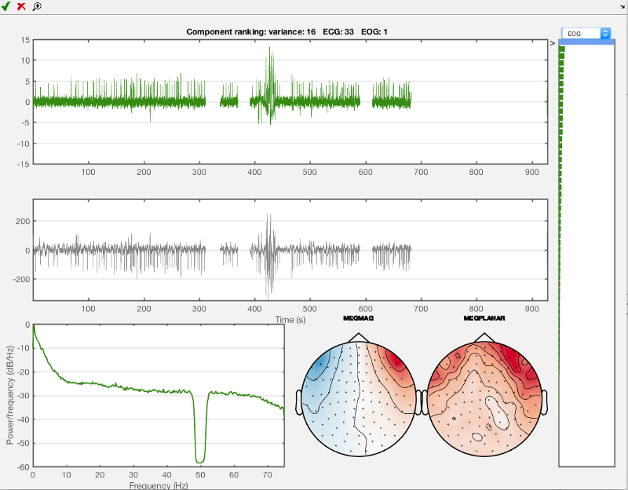
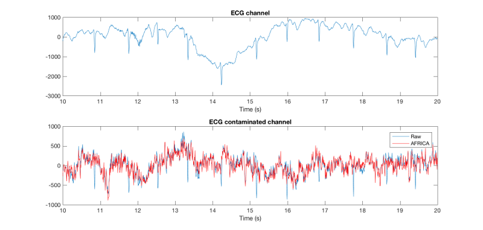
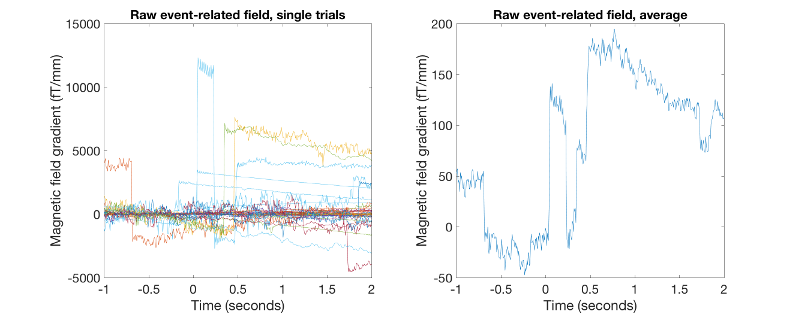
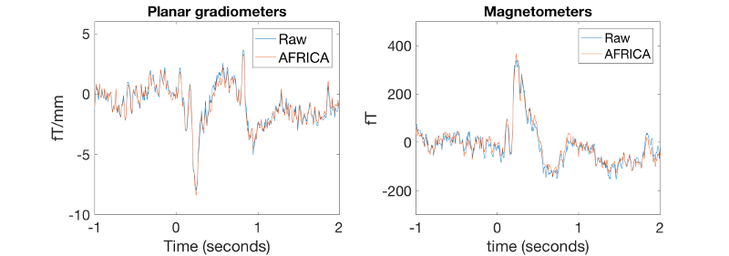
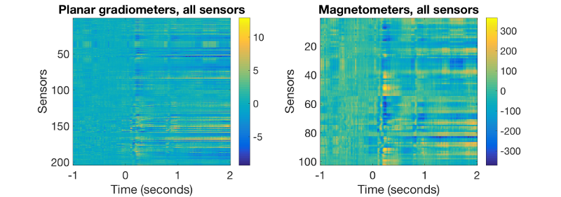
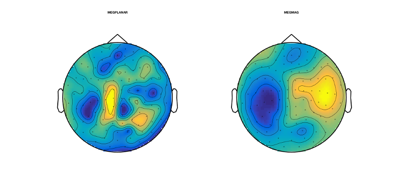
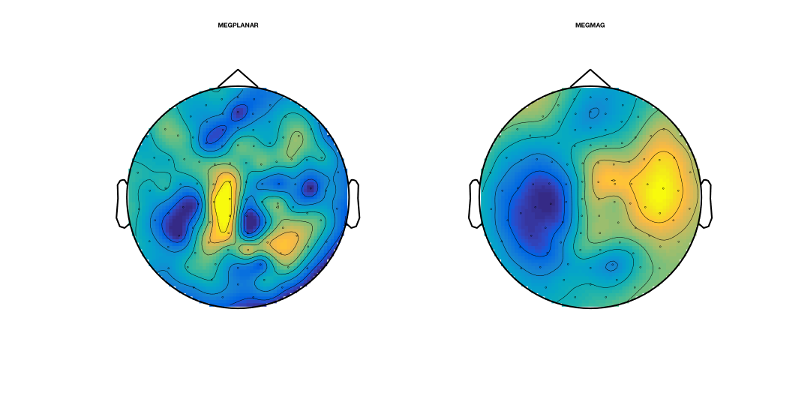

Preproc - manual
This an example for running a manual preprocessing pipeline in OSL. For today's workshop we will copy and paste directly from this practical on the website. You can also do the same with the Matlab script found under /osl-core/examples/osl_example_preprocessing_manual.m . We will work with a single subject's data from an emotional faces task (data courtesy of Susie Murphy). This is contained in the downloadable zip.file available online.
We will take an approach here which is run step-by-step and requires manual intervention. This will go through the following steps:
Contents
- SET UP ANALYSIS
- CONVERT FROM FIF TO AN SPM M/EEG OBJECT
- THE SPM M/EEG OBJECT - LOADING AND BASIC INFORMATION
- FILTERING: HIGH-PASS AND NOTCH FILTERING
- DOWNSAMPLING
- REMOVING BAD TIME PERIODS USING OSLVIEW
- MANUAL AFRICA DENOISING
- EPOCHING OF DATA
- VISUAL ARTEFACT REJECTION
- EXAMINE AND VISUALISE CLEANED EPOCHED DATA
- EXERCISES
Note that this contains the fif file: fifs/sub1_face_sss.fif that has already been SSS Maxfiltered and downsampled to 250 Hz.
We will now run it through a manual preprocessing pipeline as outlined above.
SET UP ANALYSIS
The only thing you need to do is to go into your OSL directory (i.e. type cd /somedirectory/osl-core ) and then run the following.
osl_startup;
This will not be necessary after you have done this once, i.e. no need to repeat during one of the follow-up practicals.
SPECIFY DIRECTORIES FOR THIS ANALYSIS
Datadir and working dir should now be be pointing to the right folder, where our example data are stored.
datadir = fullfile(osldir,'example_data','preproc_example','manual');
The working directory will be same as the data directory. This is where the analysis files will be stored in.
workingdir=datadir;
Specify a list of the fif files, structural files (not applicable for this practical) and SPM files (which will be created). It is important to make sure that the order of these lists is consistent across sessions. Note that here we only have 1 subject, but more generally there would be more than one, e.g.:
% % fif_files{1}=[testdir '/fifs/sub1_face_sss.fif']; % fif_files{2}=[testdir '/fifs/sub2_face_sss.fif']; % etc...
clear fif_files spm_files_basenames; fif_files{1}=[datadir '/fifs/sub1_face_sss.fif']; spm_files_basenames{1}=['spm_meg1.mat'];
CONVERT FROM FIF TO AN SPM M/EEG OBJECT
The fif file that we are working with is sub1_face_sss.fif. This has already been max-filtered for you and downsampled to 250Hz.
This will produce a histogram plot showing the number of events detected for each code on the trigger channel. The codes used on the trigger channel for this experiment were:
1 = Neutral face 2 = Happy face 3 = Fearful face 4 = Motorbike 11 = Break between blocks 12 = Green fixation cross (response trials) 13 = Red fixation cross (following green on response trials) 14 = Red fixation cross (non-response trials) 19 = Midway break 33 = Introduction screen
% % For example, there should be 120 motorbike trials, and 80 of each of the % face conditions. Check that the histogram plot corresponds to these % trials numbers. for subnum = 1:length(fif_files), % iterates over subjects spm_files{subnum}=[workingdir '/' spm_files_basenames{subnum}]; end if(length(fif_files)>0), S2=[]; for i=1:length(fif_files), % loops over subjects S2.fif_file=fif_files{i}; S2.spm_file=spm_files{i}; S2.trigger_channel_mask='0000000000111111'; % binary mask to use on the trigger channel % The conversion to SPM will show a histogram of the event codes % and correspond to those listed below in the epoching section [D spm_files{i}] = osl_convert_script(S2); end; end;
Note that this spm file is the output from the conversion:
spm_files{1}
THE SPM M/EEG OBJECT - LOADING AND BASIC INFORMATION
This will display some summary information about the SPM M/EEG object.
% Set filenames used in following steps. for subnum = 1:length(spm_files), % iterates over subjects spm_files{subnum}=[workingdir '/' spm_files_basenames{subnum}]; end % load in the SPM M/EEG object subnum = 1; D = spm_eeg_load(spm_files{subnum});
Have a look at the SPM object by typing 'D'. Note that this is continuous data, with 232000 time points at 250Hz. We will epoch the data later.
D
The above output gives you some basic information about the M/EEG object that has been loaded into workspace. Note that the data values themselves are memory-mapped from spm_meg1.dat and can be accessed by indexing the D object. E.g, D(1,2,3) returns the field strength in the first sensor at the second sample point during the third trial).
Here are some essential methods to be used with the D object, try them consecutively:
D.ntrials % gives you the number of trials
D.conditions % shows a list of condition labels per trial, this should be 'undefined' in continuous data
D.condlist % shows the list of unique conditions
D.chanlabels % order and names of channels
D.chantype % type of channel
This will show the size of the data matrix:
D.size
Size is given in number of channels, samples and trials (respectively). The size of each dimension separately can be accessed by D.nchannels, D.nsamples and D.ntrials. Note that although the syntax of these commands is similar to those used for accessing the fields of a struct data type in Matlab D is actually an object and uses functions called 'methods' to return the requested information from the internal data structure of the D object. The internal structure is not accessible directly when working with the object.
For the full list of methods performing operations with the object, type:
methods('meeg')
For help on any method, type help meeg/method_name_of_choice to get help about a method. In terms of using above methods - you can use it in the way shown (e.g. D.ntrials) or in the way you normally use functions, i.e. ntrials(D) where D is an argument (might need additional arguments as well).
FILTERING: HIGH-PASS AND NOTCH FILTERING
Some artefacts are relatively easy to remove by filtering. Line noise is often filtered out by using an appropriate notch filter. Also, low frequency drifts can be removed by filtering. This is what we will do now.
First we perform some high-pass filtering to remove the slow trends in the data. SPM file names for input are already set, but we repeat this here so this code snippet can be used independent of the others. The filtered data set will get the prefix 'f' preceding the file name. Set filenames used in following steps and filter.
for subnum = 1:length(spm_files), % iterates over subjects spm_files{subnum}=[workingdir '/' spm_files_basenames{subnum}]; end S2=[]; S2.D=spm_files{1}; S2.band='high'; S2.freq=0.1; D=spm_eeg_filter(S2);
In a second step we reduce the line noise around 50 Hz. Please remember that filtering is blind to the origin of your signal, it might remove both line noise and any other neural signals at the same frequency, for example real gamma activity. However, for our practical and the goal of looking at event-related fields (ERFs) this approach is sufficient. The order of these two filtering procedures should not matter. But as a general rule, always double-check your data after filtering to avoid bad surprises later in the processing pipeline!
for subnum = 1:length(spm_files), % iterates over subjects spm_files{subnum}=[workingdir '/f' spm_files_basenames{subnum}]; end S2=[]; S2.D=[spm_files{1}]; S2.band='stop'; S2.freq=[48 52]; % This defines the notch filter frequency range, i.e. around 50Hz. D=spm_eeg_filter(S2);
DOWNSAMPLING
This data has already been downsampled to 250 Hz when the Maxfilter was run on it. But we will now do further downsampling as this helps to speed things up even more, and we do not need information at high frequency in this particular analysis. [Note that doing downsampling here is particularly necessary if movement compensation has been used when running Maxfilter, as this stops you from doing downsampling as part of the Maxfilter call.] Also, as a rule of thumb, always filter first (especially low-pass, not done in this practical), before downsampling to avoid any aliasing issues (https://en.wikipedia.org/wiki/Nyquist_frequency#Aliasing).
Set filenames used in following steps. Since we did both a highpass and a stopband (aka notch) filter, the prefix here needs to be 'ff'.
for subnum = 1:length(spm_files), % iterates over subjects spm_files{subnum}=[workingdir '/ff' spm_files_basenames{subnum}]; end
Regarding the output, by default, the downsampled data set will get the prefix 'd' (preceding any other prefixes acquired before). This does the downsampling:
S=[]; for subnum=1:length(spm_files), % iterates over subjects S.D=spm_files{subnum}; S.fsample_new = 150; % in Hz D = spm_eeg_downsample (S); end
LOAD THE DOWNSAMPLED SPM M/EEG OBJECT
Set filenames used in following steps. Again, to load the latest data set, we need the prefixes ffd (2x filtered and downsampled after = 'dff').
for subnum = 1:length(spm_files), % iterates over subjects spm_files{subnum}=[workingdir '/dff' spm_files_basenames{subnum}]; end
This loads in the SPM M/EEG object:
subnum = 1;
D = spm_eeg_load(spm_files{subnum});
Let's have a look at the SPM object. Note that it is continuous data, with 139200 time points at 150Hz. We will epoch the data later.
D
REMOVING BAD TIME PERIODS USING OSLVIEW
Note that there are some large artefacts. We will use the oslview functionality to remove the bad epochs. Fore more details on oslview, see:
https://sites.google.com/site/ohbaosl/preprocessing/oslview
Load in the filtered data (prefix 'f'):
for subnum = 1:length(spm_files), % iterates over subjects spm_files{subnum}=[workingdir '/dff' spm_files_basenames{subnum}]; end % load in the SPM M/EEG object subnum = 1; D = spm_eeg_load(spm_files{subnum});
Now load oslview. This data has some exceptionally bad artefacts in. Mark the epochs at around 325s, 380s and 600s as bad, as well as everything from 650 seconds to the end. Marking is done by right-clicking in the proximity of the event and click on 'Mark Event'. A first click (green dashed label) marks the begin of a bad period, another second click indicates the end (in red). This will mean that we are not using about half of the data. But with such bad artefacts this is the best we can do. We can still obtain good results with what remains. NB: Push the disk button to save to disk (no prefix will be added, same name is kept).
D=oslview(D);
MANUAL AFRICA DENOISING
In a next step we will run AFRICA denoising. AFRICA uses independent component analysis (ICA) to decompose sensor data into a set of maximally independent time courses. Using this framework, sources of interference such as eye-blinks, ECG artefacts and mains noise can be identified and removed from the data or at least attenuated. In this practical we will use manual artefact rejection by looking at the time courses and sensor topographies of each component and rejecting those that correlate with EOG and ECG measurements. The user interface displays the time course, power spectrum and sensor topography for each component. These components are sorted based on one of a number of metrics, which you can toggle using the dropdown menu. For more information about AFRICA and how to use it, please see the AFRICA wiki manual on
https://sites.google.com/site/ohbaosl/preprocessing/africa
Set new SPM M/EEG object filenames to be used in following steps
for subnum = 1:length(spm_files), % iterates over subjects spm_files{subnum}=[workingdir '/dff' spm_files_basenames{subnum}]; end
Scroll through components using the cursor keys. Identify the two components that correlate with the EOG and ECG measurements and mark them for rejection using the red cross. NB: Just close the window when finished to save your results.
for subnum = 1:length(spm_files) [dirname,filename] = fileparts(spm_files{subnum}); S = []; S.D = spm_files{subnum}; S.logfile = 1; S.ica_file = fullfile(dirname,[filename '_africa']); S.used_maxfilter = 1; S.ident.func = @identify_artefactual_components_manual; S.to_do.ica = [1 1 1]; S.ident.artefact_chans = {'EOG','ECG'}; osl_africa(S); end
Use the drop-down menu to go to ECG (electrocardiogram, heartbeat-related electrical activity). Shown below is the first component that you should see then. This is the component that is most correlated to the ECG channel measurements. Mark this first component which should look like the one below for rejection using the red cross.

Now do the same for the eye movement component, use 'EOG' in the drop-down menu and the first component you see should look like the one shown below. Mark this one for rejection as well. Then close the AFRICA window to save the changes.

VISUALISING AFRICA DENOISED CONTINUOUS DATA
Now, after having done AFRICA denoising, let's have a look at the effect this has on our data quality. AFRICA saved the cleaned data by default with 'A' preceding all the other prefixes ('ffd' in our case) . However, it also saved an 'online montage' attached to the current D object. This is what we will use now to have a look.
for subnum = 1:length(spm_files), % iterates over subjects spm_files{subnum}=[workingdir '/dff' spm_files_basenames{subnum}]; end
We load in the SPM M/EEG object that we have used for AFRICA denoising
subnum = 1;
D = spm_eeg_load(spm_files{subnum});
Now, when looking at the loaded D object you will notice that now there is something called online montage available.
D
These online montages are linear combinations of the original sensor data (= montage 0) that can be used to basically represent any linear operation. This can be very convenient since it avoids amassing data without need. Here, for example, our first online montage has been generated by AFRICA and represents the data after having removed both the most important ECG and EOG components.
This will get you the name of the first online montage:
D.montage('getname',1)
Now we can switch to any montage we want. D_raw switches to the original, raw data while D_africe switches to the AFRICA denoised data. Have a look at the output to see the difference.
D_raw=D.montage('switch',0)
D_africa=D.montage('switch',1)
Keep in mind that just switching ( as in typing D.montage('switch',0) ) is not enough, you need to assign the switched montage a variable. It will switch, but there will be no new object with the online montage applied. So always use it in the way shown above. Examine the content of each object by just typing D_raw and D_africa .
Now we plot some data to have a look at the differences between raw and denoised data.
figure; subplot(2,1,1); plot(D_raw.time(1:10000),D_raw(308,1:10000)); % takes first 10000 sample points title('ECG channel') xlim([10 20]); xlabel('Time (s)'); subplot(2,1,2); plot(D_raw.time(1:10000),D_raw(306,1:10000)); % takes first 10000 sample points title('ECG contaminated channel') xlim([10 20]); hold on; plot(D_africa.time(1:10000),D_africa(306,1:10000),'r'); xlim([10 20]); xlabel('Time (s)'); legend({'Raw' 'AFRICA'});
You should see something like this:

The first part of this figure plots the ECG channel included in the recording as reference (channel 308). In the second part we plot the two different variants of the same data set, the first shows the raw time series, and the second shows AFRICA run on it and cleaned (EOG / ECG attenuated). You can see that there is some commonalities between the ECG and some part of the raw, uncleaned time-series in the data (at least in that channel, 306), but that this is gone in the AFRICA denoised version. That means that AFRICA has removed most of the ECG contaminated parts in the signal. This is clearly superior to filtering, for example you should see one bump that looks a bit like a heart beat component, but it is not in the ECG channel. After AFRICA denoising this downward deflection is still there, which is desirable, since it is not ECG. Filtering would just have removed all these bumps equally, including any neuronal signal in that frequency range.
EPOCHING OF DATA
Now we will do some preliminary epoching for the purpose of finding outliers. This is not the final epoching. Instead this sets up the epoch definitions, and performs a temporary epoching for the purpose of doing semi-automated outlier trial rejection (before running the fully automated OAT).
The epoch definitions and the continuous data will be kept and passed into OAT. This is so that things like temporal filtering (which is dones as part of OAT) can be done on the continuous data, before the data is epoched inside OAT. Note that this will also remove those trials that overlap with the bad epochs identified using OSLview.
Here the epochs are set to be from -1000ms to +2000ms relative to the triggers in the MEG data. We also specify the trigger values for each of the 4 epoch types of interest (motorcycle images, neutral faces, fearful faces, happy faces). To repeat, the codes used on the trigger channel for this experiment were:
1 = Neutral face 2 = Happy face 3 = Fearful face 4 = Motorbike 11 = Break between blocks 12 = Green fixation cross (response trials) 13 = Red fixation cross (following green on response trials) 14 = Red fixation cross (non-response trials) 19 = Midway break 33 = Introduction screen
Note that we are only interested in the first 4 event codes listed here for today's workshop.
As before, here we set filenames used for the following step. Prefix is now 'dff'. The next part does the actual epoching:
for subnum = 1:length(spm_files), % iterates over subjects spm_files{subnum}=[workingdir '/dff' spm_files_basenames{subnum}]; end for i=1:length(spm_files), % Iterating over subjects % define the trials we want from the event information S2 = []; S2.D = spm_files{i}; D_continuous=spm_eeg_load(S2.D); D_continuous=D_continuous.montage('switch',0); pretrig = -1000; % epoch start in ms posttrig = 2000; % epoch end in ms S2.timewin = [pretrig posttrig]; % event definitions S2.trialdef(1).conditionlabel = 'Neutral face'; S2.trialdef(1).eventtype = 'STI101_down'; S2.trialdef(1).eventvalue = 1; S2.trialdef(2).conditionlabel = 'Happy face'; S2.trialdef(2).eventtype = 'STI101_down'; S2.trialdef(2).eventvalue = 2; S2.trialdef(3).conditionlabel = 'Fearful face'; S2.trialdef(3).eventtype = 'STI101_down'; S2.trialdef(3).eventvalue = 3; S2.trialdef(4).conditionlabel = 'Motorbike'; S2.trialdef(4).eventtype = 'STI101_down'; S2.trialdef(4).eventvalue = 4; S2.reviewtrials = 0; S2.save = 0; S2.epochinfo.padding = 0; S2.event = D_continuous.events; S2.fsample = D_continuous.fsample; S2.timeonset = D_continuous.timeonset; [epochinfo.trl, epochinfo.conditionlabels, S3] = spm_eeg_definetrial(S2); % do epoching S3=[]; S3 = epochinfo; S3.D = D_continuous; D = osl_epoch(S3); end;
After epoching, data will be stored in a file with the prefix 'e', preceding all the other prefixes acquired during preprocessing (in our case 'dff').
EXAMINING THE EPOCHED DATA
Now we'll take a look at our preprocessed data so far. Note that this is now EPOCHED data, with:
- 4 conditions
- 323 channels
- 451 samples per trial
- 360 trials
We need to load in the data with prefix 'edff'.
for subnum = 1:length(spm_files), % iterates over subjects spm_files{subnum}=[workingdir '/edff' spm_files_basenames{subnum}]; end D = spm_eeg_load(spm_files{subnum});
Have a look at the SPM object. Note that this is now EPOCHED data:
D
Display a list of trial types:
D.condlist
Display time points (in seconds) per trial:
D.time
The command below helps to identify trials of a certain type using the indtrial function. E.g.:
motorbike_trls = indtrial(D,'Motorbike')
It displays all trials for the motorbike condition in the data (regardless of whether they contain good or bad data segments).
Identify channels of certain types using the indchantypes function. E.g. identify the channel indices for the planar gradiometers and for the magnetometers (what you have available may depend on the actual MEG device). Note that you can use 'MEGMAG' to get the magnetometers, and D.chantype gives you a list of all channel types by index.
planars = D.indchantype('MEGPLANAR')
magnetos = D.indchantype('MEGMAG')
We can access the actual MEG data using the syntax: D(channels, samples, trials). E.g. plot a figure showing all the trials for the motorbike condition in the 135th MEGPLANAR channel. Note that the squeeze function is needed to remove single dimensions for passing to the plot function, and D.time is used to return the time points relative to the trigger events (t=0 is time of stimulus onset) in seconds.
figure('units','normalized','outerposition',[0 0 0.5 0.4]); subplot(1,2,1); % this plots all single trials plot(D.time,squeeze(D(planars(135),:,motorbike_trls))); xlabel('Time (seconds)','FontSize',20); ylabel('Magnetic field gradient (fT/mm)','FontSize',20); set(gca,'FontSize',20) title('Raw event-related field, single trials','FontSize',20) subplot(1,2,2); plot(D.time,squeeze(mean(D(planars(135),:,motorbike_trls),3))); % this averages over trials xlabel('Time (seconds)'); ylabel('Magnetic field gradient (fT/mm)','FontSize',20); set(gca,'FontSize',20) title('Raw event-related field, average','FontSize',20)
You should see something like this:

As you will notice, the ERF, both single trials and the average obtained are actually not usable at all. However, we should bear in mind that this data is averaging over all data including data already marked as bad (using oslview). As well as excluding these already marked as bad noisy data segments, we can do even better by next performing outlier rejection on the now epoched data, and exclude any bad trials or channels (see below).
VISUAL ARTEFACT REJECTION
Now we will run a Fieldtrip interactive tool.
for subnum = 1:length(spm_files), % iterates over subjects spm_files{subnum}=[workingdir '/edff' spm_files_basenames{subnum}]; end for i=1:length(spm_files), % Run the visual artifact rejection S2=[]; S2.D = spm_files{i}; S2.time_range=[-0.2 0.4]; D2=osl_rejectvisual(S2); end;
Pass over the first interactive figure as it is the EOG channel - so just press the "quit" button. This will bring up another interactive figure which will show the magnetometers. You can choose the metric to display - it is best to stick to the default, which is variance. This metric is then displayed for the different trials (bottom left), the different channels (top right), and for the combination of the two (top left). You need to use this information to identify those trials and channels with high variance and remove them.
- Remove the worst channel (with highest variance) by drawing a box around it in the top right plot with the mouse.
- Now remove the trials with high variance by drawing a box around them in the bottom left plot.
- Repeat this until you are happy that there are no more outliers.
- Press "quit" and repeat the process for the gradiometers. Please note that this operation does not create a new file or new prefix.
EXAMINE AND VISUALISE CLEANED EPOCHED DATA
We can now repeat the average over all the motorbike trials with the bad trials removed to get a much cleaner ERF.
Set new SPM M/EEG object filenames to be used in following steps
for subnum = 1:length(spm_files), % iterates over subjects spm_files{subnum}=[workingdir '/edff' spm_files_basenames{subnum}]; end
This loads in our data, the SPM M/EEG object
subnum = 1;
D = spm_eeg_load(spm_files{subnum});
Here we switch to montage 0 (raw data). Sometimes switching back is necessary, when the data sets has been modified, so it's always wise to check the applied montage.
D_raw=D.montage('switch',0)
Here we get the indices for both types of MEG sensors:
planars = D_raw.indchantype('MEGPLANAR')
magnetos = D_raw.indchantype('MEGMAG')
We list the marked bad channels and bad trials:
D_raw.badchannels
D_raw.badtrials
Depending on how strict you were with the visual artefact rejection, you should have quite a lot of rejected trials and possibly some rejected channels.
Now we identify the motorbike image trials. Note that indtrial includes good AND bad trials, so bad trials need to be excluded. 'good' finds the trials that are not bad.
good_motorbike_trls = D_raw.indtrial('Motorbike','good');
As before after AFRICA, we will make use of the online montages. Note that the online montage got carried over when doing the epoching. So in principle there is no need to do epoching on both the 'raw' and AFRICA denoised data separately. Epoching on the raw data containing the AFRICA montage allows you to switch between raw and AFRICA denoised data after epoching without problems. So now we switch to online montage 1 ('AFRICA denoised data'). Again, keep in mind to assign it a new object (e.g. D_africa):
D_africa=D.montage('switch',1)
Now let us plot a cleaned rudimentary ERF for both the raw and AFRICA denoised data, but after having excluded the bad samples from oslview and the rejected trials from the artifact rejection. Now, data should look much better. Also, let us see how much the task-related activity, i.e. the ERF differs between 'raw' and AFRICA denoised data.
This should give you some nice event-related fields.
figure('units','normalized','outerposition',[0 0 0.4 0.3]); subplot(1,2,1); % plots gradiometers, raw plot(D_raw.time,squeeze(mean(D_raw(planars(135),:,good_motorbike_trls),3))); xlabel('Time (seconds)','FontSize',20);ylim([-10 6]) set(gca,'FontSize',20) ylabel(D.units(planars(1)),'FontSize',20); hold on; subplot(1,2,1); % plots gradiometers, AFRICA denoised plot(D_raw.time,squeeze(mean(D_africa(planars(135),:,good_motorbike_trls),3))); xlabel('Time (seconds)','FontSize',20);ylim([-10 6]) legend({'Raw' 'AFRICA'},'FontSize',20); set(gca,'FontSize',20) title('Planar gradiometers','FontSize',20) subplot(1,2,2); % plots magnetometers, raw plot(D_raw.time,squeeze(mean(D_raw(magnetos(49),:,good_motorbike_trls),3))); xlabel('time (seconds)','FontSize',20);ylim([-300 500]) ylabel(D.units(magnetos(1)),'FontSize',20); set(gca,'FontSize',20) hold on; subplot(1,2,2); % plots magnetometers, AFRICA denoised version plot(D_africa.time,squeeze(mean(D_africa(magnetos(49),:,good_motorbike_trls),3))); xlabel('time (seconds)');ylim([-300 500]) ylabel(D.units(magnetos(1)),'FontSize',20); set(gca,'FontSize',20) legend({'Raw' 'AFRICA'}) title('Magnetometers','FontSize',20)
These ERFs now should look much better than before. They should look like this:

Now we will plot a 2D image of all cleaned rudimentary ERFs across all sensors (204 planar gradiometers and 102 magnetometers):
figure('units','normalized','outerposition',[0 0 0.4 0.3]); % plots gradiometers subplot(1,2,1);imagesc(D.time,[],squeeze(mean(D_africa([planars(:)],:,good_motorbike_trls),3))); xlabel('Time (seconds)','FontSize',20); ylabel('Sensors','FontSize',20);colorbar title('Planar gradiometers, all sensors','FontSize',20) set(gca,'FontSize',20) subplot(1,2,2); % plots magnetometers imagesc(D.time,[],squeeze(mean(D_africa([magnetos(:)],:,good_motorbike_trls),3))); xlabel('Time (seconds)','FontSize',20); ylabel('Sensors','FontSize',20);colorbar title('Magnetometers, all sensors','FontSize',20) set(gca,'FontSize',20)
These 2D images should correspond to the curves before. They should look like this:

PLOTTING EVENT-RELATED TOPOGRAPHIES AT DEFINED LATENCIES
To plot a cleaned rudimentary ERF topography (here at a relatively late latency) over all good trials, do:
figure('units','normalized','outerposition',[0 0 0.4 0.4]); topo=squeeze(mean(D(:,188,good_motorbike_trls),3)); sensors_topoplot(D,topo,{'MEGPLANAR' 'MEGMAG'},1);
The obtained topographies should correspond to the ERF time series at this time:
D.time(188)
They should look like this:

Now we do the same procedures for the AFRICA denoised online montage:
figure('units','normalized','outerposition',[0 0 0.4 0.4]); topo2=squeeze(mean(D_africa(:,188,good_motorbike_trls),3)); sensors_topoplot(D_africa,topo2,{'MEGPLANAR' 'MEGMAG'},1);
They should look like this. Have a look at how different these topographies look. Do you have an idea why now everything looks much more similar than before?

EXERCISES
If you want to play around with the data and the cleaning approaches presented here, have a look at what happens when you remove more independent components during AFRICA. Also you can have a look at the interaction of oslview and AFRICA. For example, if you do not cut out the bad segments during oslview rejection, can you still get decent ERFs in the end? How many independent components would you need to remove to get some ERFs and are they still comparable to the ones generated earlier? Also, keep in mind that the data used here was meant to demonstrate the effect of artefacts in the data. Have a look at the other data sets presented during the following practical and see whether you can get similar success with even cleaner data, following the pipeline demonstrate in this practical here.